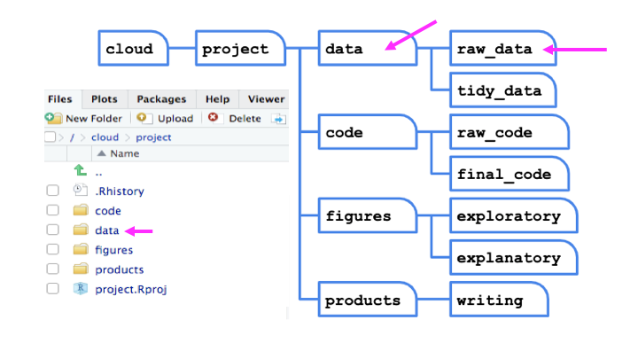

Chapter 2 Importing Data in the Tidyverse
Data are stored in all sorts of different file formats and structures. In this course, we’ll discuss each of these common formats and discuss how to get them into R so you can start working with them!
2.1 About This Course
Getting data into your statistical analysis system can be one of the most challenging parts of any data science project. Data must be imported and harmonized into a coherent format before any insights can be obtained. You will learn how to get data into R from commonly used formats and harmonizing different kinds of datasets from different sources. If you work in an organization where different departments collect data using different systems and different storage formats, then this course will provide essential tools for bringing those datasets together and making sense of the wealth of information in your organization.
This course introduces the Tidyverse tools for importing data into R so that it can be prepared for analysis, visualization, and modeling. Common data formats are introduced, including delimited files, spreadsheets and relational databases, and techniques for obtaining data from the web are demonstrated, such as web scraping and web APIs.
In this specialization we assume familiarity with the R programming language. If you are not yet familiar with R, we suggest you first complete R Programming before returning to complete this course.
2.2 Tibbles
Before we can discuss any particular file format, let’s discuss the end goal - the tibble! If you’ve been using R for a while, you’re likely familiar with the data.frame. It’s best to think of tibbles as an updated and stylish version of the data.frame. And, tibbles are what tidyverse packages work with most seamlessly. Now, that doesn’t mean tidyverse packages require tibbles. In fact, they still work with data.frames, but the more you work with tidyverse and tidyverse-adjacent packages, the more you’ll see the advantages of using tibbles.
Before we go any further, tibbles are data frames, but they have some new bells and whistles to make your life easier.
2.2.1 How tibbles differ from data.frame
There are a number of differences between tibbles and data.frames. To see a full vignette about tibbles and how they differ from data.frame, you’ll want to execute vignette("tibble") and read through that vignette. However, we’ll summarize some of the most important points here:
- Input type remains unchanged - data.frame is notorious for treating strings as factors; this will not happen with tibbles
- Variable names remain unchanged - In base R, data.frame will remove spaces from names, converting them to periods or add “x” before numeric column names. Tibbles will not change variable (column) names on you
- There are no
row.names()for a tibble - Tidy data requires that variables be stored in a consistent way, removing the need for row names. - Tibbles print first ten rows and columns that fit on one screen - Printing a tibble to screen will never print the entire huge data frame out. By default, it just shows what fits to your screen.
2.2.2 Creating a tibble
The tibble package is part of the tidyverse and can thus be loaded in (once installed) using:
2.2.2.1 as_tibble()
Since many packages use the historical data.frame from base R, you’ll often find yourself in the situation that you have a data.frame and want to convert that data.frame to a tibble. To do so, the as_tibble() function is exactly what you’re looking for.
For example, the trees dataset is a data.frame that’s available in base R. This dataset stores the diameter, height and volume for Black Cherry Trees. To convert this data.frame to a tibble you would use the following:
## # A tibble: 31 x 3
## Girth Height Volume
## <dbl> <dbl> <dbl>
## 1 8.3 70 10.3
## 2 8.6 65 10.3
## 3 8.8 63 10.2
## 4 10.5 72 16.4
## 5 10.7 81 18.8
## 6 10.8 83 19.7
## 7 11 66 15.6
## 8 11 75 18.2
## 9 11.1 80 22.6
## 10 11.2 75 19.9
## # … with 21 more rowsNote in the above example and as mentioned earlier, that tibbles, by default, only print the first ten rows to screen. If you were to print trees to screen, all 31 rows would be displayed. When working with large data.frames, this default behavior can be incredibly frustrating. tibbles remove this frustration with its default settings for tibble printing.
Additionally, you’ll note that the type of the variable is printed for each variable in the tibble. This helpful feature is another added bonus of tibbles relative to data.frame.
If you do want to see more rows from the tibble, there are a few options! First, the View() function in RStudio is incredibly helpful. The input to this function is the data.frame or tibble you’d like to see. Specifically, View(trees) would provide you, the viewer, with a scrollable view (in a new tab) of the complete dataset.
A second option is the fact that print() enables you to specify how many rows and columns you’d like to display. Here, we again display the trees data.frame as a tibble but specify that we’d only like to see 5 rows. The width = Inf argument specifies that we’d like to see all the possible columns. Here, there are only 3, but for larger datasets, this can be helpful to specify.
## # A tibble: 31 x 3
## Girth Height Volume
## <dbl> <dbl> <dbl>
## 1 8.3 70 10.3
## 2 8.6 65 10.3
## 3 8.8 63 10.2
## 4 10.5 72 16.4
## 5 10.7 81 18.8
## # … with 26 more rows2.2.2.2 tibble()
Alternatively, you can create a tibble on the fly by using tibble() and specifying the information you’d like stored in each column. Note that if you provide a single value, this value will be repeated across all rows of the tibble. This is referred to as “recycling inputs of length 1.”
In the example here, we see that the column c will contain the value ‘1’ across all rows.
## # A tibble: 5 x 4
## a b c z
## <int> <int> <dbl> <dbl>
## 1 1 6 1 50
## 2 2 7 1 82
## 3 3 8 1 122
## 4 4 9 1 170
## 5 5 10 1 226The tibble() function allows you to quickly generate tibbles and even allows you to reference columns within the tibble you’re creating, as seen in column z of the example above.
We also noted previously that tibbles can have column names that are not allowed in data.frame. In this example, we see that to utilize a nontraditional variable name, you surround the column name with backticks. Note that to refer to such columns in other tidyverse packages, you’ll continue to use backticks surrounding the variable name.
## # A tibble: 5 x 3
## `two words` `12` `:)`
## <int> <chr> <chr>
## 1 1 numeric smile
## 2 2 numeric smile
## 3 3 numeric smile
## 4 4 numeric smile
## 5 5 numeric smile2.2.3 Subsetting
Subsetting tibbles also differs slightly from how subsetting occurs with data.frame. When it comes to tibbles, [[ can subset by name or position;`$ only subsets by name. For example:
## [1] 50 82 122 170 226## [1] 50 82 122 170 226## [1] 50 82 122 170 226Having now discussed tibbles, which are the type of object most tidyverse and tidyverse-adjacent packages work best with, we now know the goal. In many cases, tibbles are ultimately what we want to work with in R. However, data are stored in many different formats outside of R. We’ll spend the rest of this course discussing those formats and talking about how to get those data into R so that you can start the process of working with and analyzing these data in R.
2.3 Spreadsheets
Spreadsheets are an incredibly common format in which data are stored. If you’ve ever worked in Microsoft Excel or Google Sheets, you’ve worked with spreadsheets. By definition, spreadsheets require that information be stored in a grid utilizing rows and columns.
2.3.1 Excel files
Microsoft Excel files, which typically have the file extension .xls or .xlsx, store information in a workbook. Each workbook is made up of one or more spreadsheet. Within these spreadsheets, information is stored in the format of values and formatting (colors, conditional formatting, font size, etc.). While this may be a format you’ve worked with before and are familiar, we note that Excel files can only be viewed in specific pieces of software (like Microsoft Excel), and thus are generally less flexible than many of the other formats we’ll discuss in this course. Additionally, Excel has certain defaults that make working with Excel data difficult outside of Excel. For example, Excel has a habit of aggressively changing data types. For example if you type 1/2, to mean 0.5 or one-half, Excel assumes that this is a date and converts this information to January 2nd. If you are unfamiliar with these defaults, your spreadsheet can sometimes store information other than what you or whoever entered the data into the Excel spreadsheet may have intended. Thus, it’s important to understand the quirks of how Excel handles data. Nevertheless, many people do save their data in Excel, so it’s important to know how to work with them in R.
2.3.1.1 Reading Excel files into R
Reading spreadsheets from Excel into R is made possible thanks to the readxl package. This is not a core tidyverse package, so you’ll need to install and load the package in before use:
The function read_excel() is particularly helpful whenever you want read an Excel file into your R Environment. The only required argument of this function is the path to the Excel file on your computer. In the following example, read_excel() would look for the file “filename.xlsx” in your current working directory. If the file were located somewhere else on your computer, you would have to provide the path to that file.
Within the readxl package there are a number of example datasets that we can use to demonstrate the packages functionality. To read the example dataset in, we’ll use the readxl_example() function.
## # A tibble: 150 x 5
## Sepal.Length Sepal.Width Petal.Length Petal.Width Species
## <dbl> <dbl> <dbl> <dbl> <chr>
## 1 5.1 3.5 1.4 0.2 setosa
## 2 4.9 3 1.4 0.2 setosa
## 3 4.7 3.2 1.3 0.2 setosa
## 4 4.6 3.1 1.5 0.2 setosa
## 5 5 3.6 1.4 0.2 setosa
## 6 5.4 3.9 1.7 0.4 setosa
## 7 4.6 3.4 1.4 0.3 setosa
## 8 5 3.4 1.5 0.2 setosa
## 9 4.4 2.9 1.4 0.2 setosa
## 10 4.9 3.1 1.5 0.1 setosa
## # … with 140 more rowsNote that the information stored in df is a tibble. This will be a common theme throughout the packages used in these courses.
Further, by default, read_excel() converts blank cells to missing data (NA). This behavior can be changed by specifying the na argument within this function. There are a number of additional helpful arguments within this function. They can all be seen using ?read_excel, but we’ll highlight a few here:
sheet- argument specifies the name of the sheet from the workbook you’d like to read in (string) or the integer of the sheet from the workbook.col_names- specifies whether the first row of the spreadsheet should be used as column names (default: TRUE). Additionally, if a character vector is passed, this will rename the columns explicitly at time of import.skip- specifies the number of rows to skip before reading information from the file into R. Often blank rows or information about the data are stored at the top of the spreadsheet that you want R to ignore
For an example, we are able to change the column names directly by passing a character string to the col_names argument:
## # A tibble: 151 x 5
## A B C D E
## <chr> <chr> <chr> <chr> <chr>
## 1 Sepal.Length Sepal.Width Petal.Length Petal.Width Species
## 2 5.1 3.5 1.4 0.2 setosa
## 3 4.9 3 1.4 0.2 setosa
## 4 4.7 3.2 1.3 0.2 setosa
## 5 4.6 3.1 1.5 0.2 setosa
## 6 5 3.6 1.4 0.2 setosa
## 7 5.4 3.9 1.7 0.4 setosa
## 8 4.6 3.4 1.4 0.3 setosa
## 9 5 3.4 1.5 0.2 setosa
## 10 4.4 2.9 1.4 0.2 setosa
## # … with 141 more rowsTo take this a step further let’s discuss one of the lesser-known arguments of the read_excel() function: .name_repair. This argument allows for further fine-tuning and handling of column names.
The default for this argument is .name_repair = "unique". This checks to make sure that each column of the imported file has a unique name. If TRUE, readxl leaves them as is, as you see in the example here:
# read example file into R using .name_repair default
read_excel(
readxl_example("deaths.xlsx"),
range = "arts!A5:F8",
.name_repair = "unique"
)## # A tibble: 3 x 6
## Name Profession Age `Has kids` `Date of birth` `Date of death`
## <chr> <chr> <dbl> <lgl> <dttm> <dttm>
## 1 David Bow… musician 69 TRUE 1947-01-08 00:00:00 2016-01-10 00:00:00
## 2 Carrie Fi… actor 60 TRUE 1956-10-21 00:00:00 2016-12-27 00:00:00
## 3 Chuck Ber… musician 90 TRUE 1926-10-18 00:00:00 2017-03-18 00:00:00Another option for this argument is .name_repair = "universal". This ensures that column names don’t contain any forbidden characters or reserved words. It’s often a good idea to use this option if you plan to use these data in other packages downstream. This ensures that all the column names will work, regardless of the R package being used.
# require use of universal naming conventions
read_excel(
readxl_example("deaths.xlsx"),
range = "arts!A5:F8",
.name_repair = "universal"
)## New names:
## * `Has kids` -> Has.kids
## * `Date of birth` -> Date.of.birth
## * `Date of death` -> Date.of.death## # A tibble: 3 x 6
## Name Profession Age Has.kids Date.of.birth Date.of.death
## <chr> <chr> <dbl> <lgl> <dttm> <dttm>
## 1 David Bowie musician 69 TRUE 1947-01-08 00:00:00 2016-01-10 00:00:00
## 2 Carrie Fish… actor 60 TRUE 1956-10-21 00:00:00 2016-12-27 00:00:00
## 3 Chuck Berry musician 90 TRUE 1926-10-18 00:00:00 2017-03-18 00:00:00Note that when using .name_repair = "universal", you’ll get a readout about which column names have been changed. Here you see that column names with a space in them have been changed to periods for word separation.
Aside from these options, functions can be passed to .name_repair. For example, if you want all of your column names to be uppercase, you would use the following:
# pass function for column naming
read_excel(
readxl_example("deaths.xlsx"),
range = "arts!A5:F8",
.name_repair = toupper
)## # A tibble: 3 x 6
## NAME PROFESSION AGE `HAS KIDS` `DATE OF BIRTH` `DATE OF DEATH`
## <chr> <chr> <dbl> <lgl> <dttm> <dttm>
## 1 David Bow… musician 69 TRUE 1947-01-08 00:00:00 2016-01-10 00:00:00
## 2 Carrie Fi… actor 60 TRUE 1956-10-21 00:00:00 2016-12-27 00:00:00
## 3 Chuck Ber… musician 90 TRUE 1926-10-18 00:00:00 2017-03-18 00:00:00Notice that the function is passed directly to the argument. It does not have quotes around it, as we want this to be interpreted as the toupper() function.
Here we’ve really only focused on a single function (read_excel()) from the readxl package. This is because some of the best packages do a single thing and do that single thing well. The readxl package has a single, slick function that covers most of what you’ll need when reading in files from Excel. That is not to say that the package doesn’t have other function (it does!), but this function will cover your needs most of the time.
2.3.2 Google Sheets
Similar to Microsoft Excel, Google Sheets is another place in which spreadsheet information is stored. Google Sheets also stores information in spreadsheets within workbooks. Like Excel, it allows for cell formatting and has defaults during data entry that could get you into trouble if you’re not familiar with the program.
Unlike Excel files, however, Google Sheets live on the Internet, rather than your computer. This makes sharing and updating Google Sheets among people working on the same project much quicker. This also makes the process for reading them into R slightly different. Accordingly, it requires the use of a different, but also very helpful package, googlesheets!
As Google Sheets are stored on the Internet and not on your computer, the googlesheets package does not require you to download the file to your computer before reading it into R. Instead, it reads the data into R directly from Google Sheets. Note that if the data hosted on Google Sheets changes, every time the file is read into R, the most updated version of the file will be utilized. This can be very helpful if you’re collecting data over time; however, it could lead to unexpected changes in results if you’re not aware that the data in the Google Sheet is changing.
To see exactly what we mean, let’s look at a specific example. Imagine you’ve sent out a survey to your friends asking about how they spend their day. Let’s say you’re mostly interested in knowing the hours spent on work, leisure, sleep, eating, socializing, and other activities. So in your Google Sheet you add these six items as columns and one column asking for your friends names. To collect this data, you then share the link with your friends, giving them the ability to edit the Google Sheet.
Survey Google Sheets
Your friends will then one-by-one complete the survey. And, because it’s a Google Sheet, everyone will be able to update the Google Sheet, regardless of whether or not someone else is also looking at the Sheet at the same time. As they do, you’ll be able to pull the data and import it to R for analysis at any point. You won’t have to wait for everyone to respond. You’ll be able to analyze the results in real-time by directly reading it into R from Google Sheets, avoiding the need to download it each time you do so.
In other words, every time you import the data from the Google Sheets link using the googlesheets package, the most updated data will be imported. Let’s say, after waiting for a week, your friends’ data look something like this:
Survey Data
You’d be able to analyze these updated data using R and the googlesheets package!
In fact, let’s have you do that right now! Click on this link to see these data!
2.3.2.1 The googlesheets package
The googlesheets package allows R users to take advantage of the Google Sheets Application Programming Interface (API). Very generally, APIs allow different applications to communicate with one another. In this case, Google has released an API that allows other software to communicate with Google Sheets and retrieve data and information directly from Google Sheets. The googlesheets package enables R users (you!) to easily access the Google Sheets API and retrieve your Google Sheets data.
Using this package is is the best and easiest way to analyze and edit Google Sheets data in R. In addition to the ability of pulling data, you can also edit a Google Sheet or create new sheets.
The googlesheets package is tidyverse-adjacent, so it requires its own installation and for you to load it into R before it can be used
2.3.2.1.1 Getting Started with googlesheets
Now, let’s get to importing your survey data into R. Every time you start a new session, you need to authenticate the use of googlesheets package with your Google account. This is a great features as it ensures that you want to allow access to your Google Sheets and allows the Google Sheets API to make sure that you should have access to the files you’re going to try to access.
The command gs_auth(new_user = TRUE) will open a new page in your browser that asks you which Google account’s Google Sheets you’d like to give access to. Click on the appropriate Google user to provide googlesheets access to the Google Sheets API.
Authenticate
After you click “ALLOW”, giving permission for the googlesheets package to connect to your Google account, you will likely be shown a screen where you will be asked to copy an authentication code. Copy this authentication code and paste it into R.
Allow
2.3.2.1.2 Navigating googlesheets: gs_ls() and gs_title()
Once authenticated, you can use the command gs_ls() to list all your worksheets on Google Sheets as a table.
In order to ultimately access the information a specific Google Sheet, you have to first register the sheet. To do this we’ll use gs_title(). For the example below to work, you’ll need to have a Google Sheet named “survey” in your account. To access this sheet, navigate to [https://docs.google.com/spreadsheets/d/1FN7VVKzJJyifZFY5POdz_LalGTBYaC4SLB-X9vyDnbY/] in your web browser.
Note that we assign the information stored from registering this Google Sheet to the object survey_sheet so that we can use it again shortly.
If you type the name of the sheet correctly and it exists in your Google Drive, you will see a message that says Sheet successfully identified: “survey”.
Sheet successfully identified
2.3.2.1.3 Reading data in using googlesheets: gs_read()
At this point, your Google Sheet is registered and you can now read the data into R using the function gs_read(). The survey_sheet object output you generated using gs_title() will now be the input to gs_read():
Sheet successfully read into R
There are additional (optional) arguments to gs_read(), some are similar to those in read_csv() and read_excel(), while others are more specific to reading in Google Sheets:
skip = 1: will skip the first row of the Google Sheetws = 1: specifies that you wantgooglesheetsto read in the first worksheet in your Google Sheetcol_names = FALSE: specifies that the first row is not column namesrange = "A1:G5": specifies the range of cells that we like to import is A1 to G5.n_max = 100: specifies the maximum number of rows that we want to import is 100.
gs_title() is not the only way in which a sheet can be registered. Google Sheets can also be registered by URL or key. Within the Google Sheets package, a practice Google Sheet is available for you so that you can familiarize yourself with these approaches before working with your own data.
There is a dataset provided as an example with the googlesheets package. The data stored in the example dataset come from the Gapminder dataset. This includes longitudinal data about a few global economic variables. We’ll use this dataset to discuss registering a Google Sheet by key or URL.
To register a Google sheet in googlesheets by key, you must first know the key of the Google Sheet and have access to it. To work through a full example here you’ll first want to navigate to [https://docs.google.com/spreadsheets/d/1BzfL0kZUz1TsI5zxJF1WNF01IxvC67FbOJUiiGMZ_mQ/] in your web browser. This will open up the gapminder dataset in Google Sheets so that you can have a look at the data in Google Sheets.
Gapminder Dataset in Google Sheets
Now, it’s just up to us to register this information from Google Sheets into R using the googlesheets package. To do this, we could use the title of the sheet, the key, or the URL:
Where to find the title, key, and URL in Google Sheets
# register in with title
gs_title("test-gs-gapminder")
# register with key
gs_key("1BzfL0kZUz1TsI5zxJF1WNF01IxvC67FbOJUiiGMZ_mQ")
# register with URL
gs_url("https://docs.google.com/spreadsheets/d/1BzfL0kZUz1TsI5zxJF1WNF01IxvC67FbOJUiiGMZ_mQ/edit#gid=1150108545")Regardless of how you register the sheet, you’ll get an output to inform you that the sheet was successfully identified. (Note: if you have not opened up the Google Sheet using the Google Drive account you specified during authentication, you will get an error.)
Sheet Successfully Identified
2.3.2.1.4 Adding rows and editing cells
In addition to reading in data from Google Sheets directly using the googlesheets package, you can also modify your Google Sheet directly through R. For example, returning to our friends’ survey data example, you can edit a cell or add a row to your sheet.
Let’s say you’d like to add your own respond to the survey. For this you can use the command gs_add_row(). Note that the input argument specifies what you would like to add in the new row. If everything goes well, you will get a message saying Row successfully appended.
gs_add_row()
If you now check the sheet on Google Sheets, you will see the appended row.
Survey Data with Added Row
To edit a specific cell you can use the command gs_edit_cell() but you will have to tell googlesheets which specific cell to edit. Let’s say we want to change the value of the cell D4 from 0 to 2. For this we will use the gs_edit_cells() function. The anchor argument points to the cell that we want to modify and the input argument contains the new value that we want to assign to the cell.
gs_edit_cells()
If you were to return to your Google Sheets, you’d notice that cell D4 now has a 2, rather than a 0 in it!
2.4 CSVs
Like Excel Spreadsheets and Google Sheets, Comma-separated values (CSV) files allow us to store tabular data; however, it does this in a much simple format. CSVs are plain-text files, which means that all the important information in the file is represented by text (where text is numbers, letters, and symbols you can type on your keyboard). This means that there are no workbooks or metadata making it difficult to open these files. CSVs are flexible files and are thus the preferred storage method for tabular data for many data scientists.
For example, consider a dataset that includes information about the heights and blood types of three individuals. You could make a table that has three columns (names, heights, and blood types) and three rows (one for each person) in Google Docs or Microsoft Word. However, there is a better way of storing this data in plain text without needing to put them in table format. CSVs are a perfect way to store these data. In the CSV format, the values of each column for each person in the data are separated by commas and each row (each person in our case) is separated by a new line. This means your data would be stored in the following format:
sample CSV
Notice that CSV files have a .csv extension at the end. You can see this above at the top of the file. One of the advantages of CSV files is their simplicity. Because of this, they are one of the most common file formats used to store tabular data. Additionally, because they are plain text, they are compatible with many different types of software. CSVs can be read by most programs. Specifically, for our purposes, these files can be easily read into R (or Google Sheets, or Excel), where they can be better understood by the human eye. Here you see the same CSV opened in Google Slides, where it’s more easily interpretable by the human eye:
CSV opened in Google Slides
As with any file type, CSVs do have their limitations. Specifically, CSV files are best used for data that have a consistent number of variables across observations. For example, in our example, there are three variables for each observation: “name”, “height”, and “blood_type”. If, however, you had eye color and weight for the second observation, but not for the other rows, you’d have a different number of variables for the second observation than the other two. This type of data is not best suited for CSVs. However, whenever you have information the same number of variables across all observations, CSVs are a good bet!
2.4.1 Downloading CSV files
If you entered the same values used above into Google Slides first and wanted to download this file as a CSV to read into R, you would enter the values in Google slides, and then click on “File” and then “Download” as and choose “Comma-separated values (.csv, current sheet)”. The dataset that you created will be downloaded as a CSV file on your computer. Make sure you know the location of your file (if on a Chromebook, this will be in your “Downloads” folder).
Download as CSV file
2.4.2 Reading CSVs into R
Now that you have a CSV file, let’s discuss how to get it into R! The best way to accomplish this is using the function read_csv() from the readr package. (Note, if you haven’t installed the readr package, you’ll have to do that first.) Inside the parenthesis of the function, write the name of the file in quotes, including the file extension (.csv). Make sure you type the exact file name. Save the imported data in a data frame called df_csv. Your data will now be imported into R environment. If you use the command head(df_csv) you will see the first several rows of your imported data frame:
## install.packages("readr")
library(readr)
## read CSV into R
df_csv <- read_csv("sample_data - Sheet1.csv")
## look at the object
head(df_csv)read_csv()
Above, you see the simplest way to import a CSV file. However, as with many functions, there are other arguments that you can set to specify how to import your specific CSV file, a few of which are listed below. However, as usual, to see all the arguments for this function, use ?read_csv within R.
col_names = FALSEto specify that the first row does NOT contain column names.skip = 2will skip the first 2 rows. You can set the number to any number you want. Helpful if there is additional information in the first few rows of your data frame that are not actually part of the table.n_max = 100will only read in the first 100 rows. You can set the number to any number you want. Helpful if you’re not sure how big a file is and just want to see part of it
By default, read_csv() converts blank cells to missing data (NA).
Finally, we introduce the function read_csv here and recommend that you use it, as it is the simplest and fastest way to read CSV files into R. However, we note that there is a function read.csv() which is available by default in R. You will likely see this function in others’ code, so we just want to make sure you’re aware of it.
2.5 TSVs
Another common form of data is text files that usually come in the form of TXT or TSV file formats. Like CSVs, text files are simple, plain-text files; however, rather than columns being separated by commas, they are separated by tabs (represented by " in plain-text). Like CSVs, they don’t allow text formatting (i.e. text colors in cells) and are able to be opened on many different software platforms. This makes them good candidates for storing data.
2.6 Delimited Files
Sometimes, tab-separated files are saved with the .txt file extension. TXT files can store tabular data, but they can also store simple text. Thus, while TSV is the more appropriate extension for tabular data that are tab-separated, you’ll often run into tabular data that individuals have saved as a TXT file. In these cases, you’ll want to use the more generic read_delim() function from readr.
Google Sheets does not allow tab-separated files to be downloaded with the .txt file extension (since .tsv is more appropriate); however, if you were to have a file “sample_data.txt” uploaded into R, you could use the following code to read it into your R Environment, where " specifies that the file is tab-delimited.
2.6.1 Reading Delimited Files into R
## read TXT into R
df_txt <- read_delim("sample_data.txt", delim = "\t")
## look at the object
head(df_txt)This function allows you to specify how the file you’re reading is in delimited. This means, rather than R knowing by default whether or not the data are comma- or tab- separated, you’ll have to specify it within the argument delim in the function.
read_delim() is a more generic version of read_csv(). What this means is that you could use read_delim() to read in a CSV file. You would just need to specify that the file was comma-delimited if you were to use that function.
2.7 Exporting Data from R
The last topic of this lesson is about how to export data from R. So far we learned about reading data into R. However, sometimes you would like to share your data with others and need to export your data from R to some format that your collaborators can see.
As discussed above, CSV format is a good candidate because of its simplicity and compatibility. Let’s say you have a data frame in the R environment that you would like to export as a CSV. To do so, you could use write_csv() from the readr package.
Since both methods are fairly similar, let’s look at the one from readr package. Since we’ve already created a data frame named df_csv, we can export it to a CSV file using the following code. After typing this command, a new CSV file called my_csv_file.csv will appear in the Files section.
You could similar save your data as a TSV file using the function write_tsv() function.
We’ll finally note that there are default R functions write.csv() and write.table() that accomplish similar goals. You may see these in others’ code; however, we recommend sticking to the intuitive and quick readr functions discussed in this lesson.
2.8 JSON
All of the file formats we’ve discussed so far (tibbles, CSVs, Excel Spreadsheets and Google Sheets) are various ways to store what is known as tabular data, data where information is stored in rows and columns. To review, when data are stored in a tidy format, variables are stored in columns and each observation is stored in a different row. The values for each observation is stored in its respective cell. These rules for tabular data help define the structure of the file. Storing information in rows and columns, however, is not the only way to store data.
Alternatively, JSON (JavaScript Object Notation) data are nested and hierarchical. JSON is a very commonly-used text-based way to send information between a browser and a server. It is easy for humans to read and to write. JSON data adhere to certain rules in how they are structured. For simplicity, JSON format requires objects to be comprised of key-value pairs. For example, in the case of: {"Name": "Isabela"}, “Name” would be a key, “Isabela” would be a value, and together they would be a key-value pair. Let’s take a look at how JSON data looks in R.This means that key-pairs can be organized into different levels (hierarchical) with some levels of information being stored within other levels (nested).
JSON data are hierarchical and nested
Using a snippet of JSON data here, we see a portion of JSON data from Yelp explaining a restaurant. We’re looking at the attributes of this restaurant. Within attributes, there are four nested categories: Take-out, Wi-Fi, Drive-Thru, and Good For. In the hierarchy, attributes is at the top, while these four categories are within attributes. Within one of these attributes Good For, we see another level within the hierarchy. In this third level we see a number of other categories nested within Good For. This should give you a slightly better idea of how JSON data are structured.
To get a sense of what JSON data look like, take a peak at this minimal example:
Here, rather than reading
## generate a JSON object
json <-
'[
{"Name" : "Woody", "Age" : 40, "Occupation" : "Sherriff"},
{"Name" : "Buzz Lightyear", "Age" : 34, "Occupation" : "Space Ranger"},
{"Name" : "Andy", "Occupation" : "Toy Owner"}
]'
## take a look
json## [1] "[\n {\"Name\" : \"Woody\", \"Age\" : 40, \"Occupation\" : \"Sherriff\"}, \n {\"Name\" : \"Buzz Lightyear\", \"Age\" : 34, \"Occupation\" : \"Space Ranger\"},\n {\"Name\" : \"Andy\", \"Occupation\" : \"Toy Owner\"}\n]"Here, we’ve stored information about Toy Story characters, their age, and their occupation in an object called json
This format cannot, as it is, be easily worked with easily within R; however, jsonlite is just what to work with whenever you have data in JSON format. When using the defaults of the function fromJSON(), jsonlite will take the data from JSON array format and helpfully return a data frame.
#install.packages("jsonlite")
library(jsonlite)
## take JSON object and covert to a data frame
mydf <- fromJSON(json)
## take a look
mydf## Name Age Occupation
## 1 Woody 40 Sherriff
## 2 Buzz Lightyear 34 Space Ranger
## 3 Andy NA Toy OwnerfromJSON()
Data frames can also be returned to their original JSON format using the function: toJSON().
## [{"Name":"Woody","Age":40,"Occupation":"Sherriff"},{"Name":"Buzz Lightyear","Age":34,"Occupation":"Space Ranger"},{"Name":"Andy","Occupation":"Toy Owner"}]toJSON()
While this gives us an idea of how to work with JSON formatted data in R, we haven’t yet discussed how to read a JSON file into R. When you have data in the JSON format (file extension: .json), you’ll use the read_json() function, which helpfully looks very similar to the other read_ functions we’ve discussed so far:
# read JSON file into R
read_json("json_file.json")
# read JSON file into R and
# simplifies nested lists into vectors and data frames
read_json("json_file.json", simplifyVector = TRUE)Note in our examples here that by default, read_json() reads the data in while retaining the JSON format. However, if you would like to simplify the information into a data.frame, you’ll want to specify the argument, simplifyVector = TRUE.
2.9 XML
Extensible Markup Language (XML), is another human- and machine-readable language that is used frequently by web services and APIs. However, instead of being based on key-value pairs, XML relies on nodes, tags, and elements. The author defines these tags to specify what information is included in each element of the XML document and allows for elements to be nested within one another. The nodes define the hierarchical structure of the XML (which means that XML is hierarchical and nested like JSON)!
XML format relies on nodes, tags, and elements
XML accomplishes the same goal as JSON, but it just does it in a different format. Thus, the two formats are commonly used for similar purposes – sharing information on the web; however, because the format in which they do this is different, a different R package is needed to process XML data. This packages is called xml2.
We will look into the xml2 package a bit more when we look at importing html files.
2.10 Databases
So far we’ve discussed reading in data that exist in a single file, like a CSV file or a Google Sheet. However, there will be many cases as where the data for your project will stored across a number of different tables that are all related to one another. In this lesson, we’ll discuss what relational data are, why you would want to store data in this way, and how to work with these types of data into R.
2.10.1 Relational Data
Relational data can be thought of as information being stored across many tables, with each table being related to all the other tables. Each table is linked to every other table by a set of unique identifiers.
Relational data are related by unique identifiers
To better understand this, let’s consider a toy example. We mentioned this example in the introductory lesson in this course, and we’ll return to it now. Consider a town where you have a number of different restaurants. In one table you have information about these restaurants including, where they are located and what type of food they serve. You then have a second table where information about health and safety inspections is stored. Each inspection is a different row and the date of the inspection, the inspector, and the safety rating are stored in this table. Finally, you have a third table. This third table contains information pulled from an API, regarding the number of stars given to each restaurant, as rated by people online. Each table contains different bits of information; however, there is a common column id in each of the tables. This allows the information to be linked between the tables. The restaurant with the id “JJ29JJ” in the restaurant table would refer to the same restaurant with the id “JJ29JJ” in the health inspections table, and so on. The values in this id column are known as unique identifiers because they uniquely identify each restaurant. No two restaurants will have the same id, and the same restaurant will always have the same id, no matter what table you’re looking at. The fact that these tables have unique identifiers connecting each table to all the other tables makes this example relational data.
Unique identifiers help link entries across tables
2.10.1.1 Why relational data?
Storing data in this way has a number of advantages; however, the three most important are:
- Efficient Data Storage
- Avoids Ambiguity
- Privacy
Efficient Data Storage - By storing each bit of information in a separate table, you limit the need to repeat information. Taking our example above, imagine if we included everything in a single table. This means that for each inspection, we would copy and paste the restaurant’s address, type, and number of stars every time the facility is inspected. If a restaurant were inspected 15 times, this same information would be unnecessarily copy and pasted in each row! To avoid this, we simply separate out the information into different tables and relate them by their unique identifiers.
Avoids Ambiguity - Take a look at the first table: “restaurant” here. You may notice there are two different restaurants named “Taco Stand.” However, looking more closely, they have a different id and a different address. They’re even different types of restaurants. So, despite having the same name, they actually are two different restaurants. The unique identifier makes this immediately clear!
Unique identifiers in relational data avoid ambiguity
Privacy - In using relational data, if there is ever information that is private and only some people should have access to, using this system simplifies that. You can restrict access to some of the data to ensure only those who should have access are able to access the data.
2.10.2 Relational Databases: SQL
Now that we have an idea of what relational data are, let’s spend a second talking about how relational data are stored. Relational data are stored in databases. The most common database is SQLite. In order to work with data in databases, there has to be a way to query or search the database for the information you’re interested in. SQL queries search through SQLite databases and return the information you ask for in your query.
For example, a query of the above example may look to obtain information about any restaurant that was inspected after July 1st of 2018. One would then use SQL commands to carry out this query and return the information requested.
While we won’t be discussing how to write SQL commands in-depth here, we will be discussing how to use the R package RSQLite to connect to an SQLite database using RSQLite and how to work with relational data using dplyr and dbplyr
2.10.3 Connecting to Databases: RSQLite
To better understand databases and how to work with relational data, let’s just start working with data from a database! The data we’ll be using are from a database with relational data: company.db. The database includes 11 tables with data that represents a digital media store. The data includes information generally related to related to media, artists, artists’ work, and those who purchase artists’ work (customers). You can download the database file here:
You will need to unzip the file before using it. The original version of this database can be downloaded here. For our purposes though, we’re only going to only describe two of the tables we’ll be using in our example in this lesson. We’re going to be looking at data in the artists and albums tables, which both have the column ArtistId.
relationship between two tables in the company database
Without any more details, let’s get to it! Here you’ll see the code to install and load the RSQLite package. You’ll then load the company.db sample database, connect to the database, and first obtain a list the tables in the database. Before you begin, make sure that the file company.db is in your current working directory (you can check by calling the ls() function).
## install and load packages
## this may take a minute or two
# install.packages("RSQLite")
library(RSQLite)
## Specify driver
sqlite <- dbDriver("SQLite")
## Connect to Database
db <- dbConnect(sqlite, "company.db")
## List tables in database
dbListTables(db)## [1] "albums" "artists" "customers" "employees"
## [5] "genres" "invoice_items" "invoices" "media_types"
## [9] "playlist_track" "playlists" "sqlite_sequence" "sqlite_stat1"
## [13] "tracks"The output from dbListTables() will include 13 tables. Among them will be the two tables we’re going to work through in our example: artists, and albums.
output from dbListTables(db)
In this example, we’re downloading a database and working with the data locally. However, more often, when working with SQLite databases, you’ll be connecting remotely. Using the RSQLite package is particularly helpful in this case because it allows you to connect to and query the database from R without reading all the data in. This is helpful in the case of very large databases, where you’ll want to avoid copying all the data and will instead want to only work with the parts of the database you need.
2.10.4 Working with Relational Data: dplyr & dbplyr
To access these tables within R, we’ll have to install the packages dbplyr, which enables us to access the parts of the database we’re going to be working with. The dbplyr package allows you to use the same functions you learned when working with dplyr; however, it allows you to use these functions with a database. While dbplyr has to be loaded to work with databases, you likely won’t notice that you’re using it beyond that. Otherwise, you’ll just work with the files as if you were working with dplyr functions!
After installing and loading dbplyr, we’ll be able to use the helpful tbl() function to extract the two tables we’re interested in working with!
2.10.5 Mutating Joins
Mutating joins allow you to take two different tables and combine the variables from both tables. This requires that each table have a column relating the tables to one another (i.e. a unique identifier). This unique identifier is used to match observations between the tables.
However, when combining tables, there are a number of different ways in which the tables can be joined. We touched on this in the Data Tidying course; however, there we only covered left joins. Now, in this lesson, we’ll cover the following types of joins:
- Inner Join - only keep observations found in both
xandy - Left Join - keep all observations in
x - Right Join - keep all observations in
y - Full Join - keep any observations in
xory
Let’s break down exactly what we mean by this using just a small toy example from the artists and albums tables from the company database. Here you see three rows from the artists table and four rows from the albums table
small parts of the albums and artist tables
2.10.5.1 Inner Join
When talking about inner joins, we are only going to keep an observation if it is found in all of the tables we’re combining. Here, we’re combining the tables based on the ArtistId column. In our dummy example, there are only two artists that are found in both tables. These are highlighted in green and will be the rows used to join the two tables. Then, once the inner join happens, only these artists’ data will be included after the inner join.
inner join output will include any observation found in both tables
In our toy example, when doing an inner_join(), data from any observation found in all the tables being joined are included in the output. Here, ArtistIds “1” and “2” are in both the artists and albums tables. Thus, those will be the only ArtistIds in the output from the inner join.
And, since it’s a mutating join, our new table will have information from both tables! We now have ArtistId, Name, AlbumId, and Title in a single table! We’ve joined the two tables, based on the column ArtistId!
inner join includes observations found in both tables
Throughout this lesson we will use the coloring use see here to explain the joins, so we want to explain it explicitly here. Green cells are cells that will be used to make the merge happen and will be included in the resulting merged table. Blue cells are information that comes from the artists table that will be included after the merge. Red cells are pieces of information that come from the albums table that will be included after the merge. Finally, cells that are left white in the artists or albums table are cells that will not be included in the merge while cells that are white after the merge are NAs that have been added as a result of the merge.
Now, to run this for our tables from the database, rather than just for a few rows in our toy example, you would do the following:
## do inner join
inner <- inner_join(artists, albums, by = "ArtistId")
## look at output as a tibble
as_tibble(inner)## # A tibble: 347 x 4
## ArtistId Name AlbumId Title
## <int> <chr> <int> <chr>
## 1 1 AC/DC 1 For Those About To Rock We Salute You
## 2 2 Accept 2 Balls to the Wall
## 3 2 Accept 3 Restless and Wild
## 4 1 AC/DC 4 Let There Be Rock
## 5 3 Aerosmith 5 Big Ones
## 6 4 Alanis Morissette 6 Jagged Little Pill
## 7 5 Alice In Chains 7 Facelift
## 8 6 Antônio Carlos Jobim 8 Warner 25 Anos
## 9 7 Apocalyptica 9 Plays Metallica By Four Cellos
## 10 8 Audioslave 10 Audioslave
## # … with 337 more rows2.10.5.2 Left Join
For a left join, all rows in the first table specified will be included in the output. Any row in the second table that is not in the first table will not be included.
In our toy example this means that ArtistIDs 1, 2, and 3 will be included in the output; however, ArtistID 4 will not.
left join will include all observations found in the first table specified
Thus, our output will again include all the columns from both tables combined into a single table; however, for ArtistId 3, there will be NAs for AlbumId and Title. NAs will be filled in for any observations in the first table specified that are missing in the second table.
left join will fill in NAs
Now, to run this for our tables from the database, rather than just for a few rows in our toy example, you would do the following:
## do left join
left <- left_join(artists, albums, by = "ArtistId")
## look at output as a tibble
as_tibble(left)## # A tibble: 418 x 4
## ArtistId Name AlbumId Title
## <int> <chr> <int> <chr>
## 1 1 AC/DC 1 For Those About To Rock We Salute You
## 2 1 AC/DC 4 Let There Be Rock
## 3 2 Accept 2 Balls to the Wall
## 4 2 Accept 3 Restless and Wild
## 5 3 Aerosmith 5 Big Ones
## 6 4 Alanis Morissette 6 Jagged Little Pill
## 7 5 Alice In Chains 7 Facelift
## 8 6 Antônio Carlos Jobim 8 Warner 25 Anos
## 9 6 Antônio Carlos Jobim 34 Chill: Brazil (Disc 2)
## 10 7 Apocalyptica 9 Plays Metallica By Four Cellos
## # … with 408 more rows2.10.5.3 Right Join
Right Join is similar to what we just discussed; however, in the output from a right join, all rows in the final table specified are included in the output. NAs will be included for any observations found in the last specified table but not in the other tables.
In our toy example, that means, information about ArtistIDs 1, 2, and 4 will be included.
right join will include all observations found in the last table specified
Again, in our toy example, we see that right_join() combines the information across tables; however, in this case, ArtistId 4 is included, but Name is an NA, as this information was not in the artists table for this artist.
right join will fill in NAs
Now, to run this for our tables from the database, you would have to do something slightly different than what you saw above. Note in the code below that we have to change the class of the tables from the database into tibbles before doing the join. This is because SQL does not currently support right or full joins, but dplyr does. Thus, we first have to be sure the data are a class that dplyr can work with using as_tibble(). Other than that, the code below is similar to what you’ve seen already:
## do right join
right <- right_join(as_tibble(artists), as_tibble(albums), by = "ArtistId")
## look at output as a tibble
as_tibble(right)## # A tibble: 347 x 4
## ArtistId Name AlbumId Title
## <int> <chr> <int> <chr>
## 1 1 AC/DC 1 For Those About To Rock We Salute You
## 2 1 AC/DC 4 Let There Be Rock
## 3 2 Accept 2 Balls to the Wall
## 4 2 Accept 3 Restless and Wild
## 5 3 Aerosmith 5 Big Ones
## 6 4 Alanis Morissette 6 Jagged Little Pill
## 7 5 Alice In Chains 7 Facelift
## 8 6 Antônio Carlos Jobim 8 Warner 25 Anos
## 9 6 Antônio Carlos Jobim 34 Chill: Brazil (Disc 2)
## 10 7 Apocalyptica 9 Plays Metallica By Four Cellos
## # … with 337 more rowsWhile the output may look similar to the output from left_join(), you’ll note that there are a different number of rows due to how the join was done. The fact that 347 rows are present with the right join and 418 were present after the left join suggests that there are artists in the artists table without albums in the albums table.
2.10.5.4 Full Join
Finally, a full join will take every observation from every table and include it in the output.
full join will include any observation found in either table
Thus, in our toy example, this join produces five rows, including all the observations from either table. NAs are filled in when data are missing for an observation.
full join will fill in NAs
As you saw in the last example, to carry out a full join, we have to again specify that the objects are tibbles before being able to carry out the join
## do right join
full <- full_join(as_tibble(artists), as_tibble(albums), by = "ArtistId")
## look at output as a tibble
as_tibble(full)## # A tibble: 418 x 4
## ArtistId Name AlbumId Title
## <int> <chr> <int> <chr>
## 1 1 AC/DC 1 For Those About To Rock We Salute You
## 2 1 AC/DC 4 Let There Be Rock
## 3 2 Accept 2 Balls to the Wall
## 4 2 Accept 3 Restless and Wild
## 5 3 Aerosmith 5 Big Ones
## 6 4 Alanis Morissette 6 Jagged Little Pill
## 7 5 Alice In Chains 7 Facelift
## 8 6 Antônio Carlos Jobim 8 Warner 25 Anos
## 9 6 Antônio Carlos Jobim 34 Chill: Brazil (Disc 2)
## 10 7 Apocalyptica 9 Plays Metallica By Four Cellos
## # … with 408 more rows2.10.5.5 Mutating Joins Summary
Now that we’ve walked through a number of examples of mutating joins, cases where you’re combining information across tables, we just want to take a second to summarize the four types of joins discussed using a visual frequently used to explain the most common mutating joins where each circle represents a different table and the gray shading on the Venn diagrams indicates which observations will be included after the join.
mutating joins summary
To see a visual representation of this, there is a great resource on GitHub, where these joins are illustrated, so feel free to check out this link from Garrick Aden-Buie animating joins within relational data
2.10.6 Filtering Joins
While we discussed mutating joins in detail, we’re just going to mention the ability to carry out filtering joins. While mutating joins combined variables across tables, filtering joins affect the observations, not the variables. This still requires a unique identifier to match the observations between tables.
Filtering joins keep observations in one table based on the observations present in a second table. Specifically:
semi_join(x, y): keeps all observations inxwith a match iny.anti_join(x, y): keeps observations inxthat do NOT have a match iny.
In our toy example, if the join semi_join(artists, albums) were run, this would keep rows of artists where the ArtistID in artist was also in the albums table.
semi_join() output
Alternatively, anti_join(artists, albums) would output the rows of artists whose ArtistId was NOT found in the albums table.
anti_join() output
Note that in the case of filtering joins, the number of variables in the table after the join does not change. While mutating joins merged the tables creating a resulting table with more columns, with filtering joins we’re simply filtering the observations in one table based on the values in a second table.
2.10.7 How to Connect to a Database Online
As mentioned briefly above, most often when working with databases, you won’t be downloading the entire database. Instead, you’ll connect to a server somewhere else where the data live and query the data (search for the parts you need) from R.
For example, in this lesson we downloaded the entire company database, but only ended up using artists and albums. In the future, instead of downloading all the data, you’ll just connect to the database and work with the parts you need.
This will require connecting to the database with host, user, and password. This information will be provided by the database’s owners, but the syntax for entering this information into R to connect to the database would look something like what you see here:
## This code is an example only
con <- DBI::dbConnect(RMySQL::MySQL(),
host = "database.host.com",
user = "janeeverydaydoe",
password = rstudioapi::askForPassword("database_password")
)While not being discussed in detail here, it’s important to know that connecting to remote databases from R is possible and that this allows you to query the database without reading all the data from the database into R.
2.11 Web Scraping
We’ve mentioned previously that there is a lot of data on the Internet, which probably comes at no surprise given the vast amount of information on the Internet. Sometimes these data are in a nice CSV format that we can quickly pull from the Internet. Sometimes, the data are spread across a web page, and it’s our job to “scrape” that information from the webpage and get it into a usable format. Knowing first that this is possible within R and second, having some idea of where to start is an important start to beginning to get data from the Internet.
We’ll walk through three R packages in this lesson to help get you started in getting data from the Internet. Let’s transition a little bit to talking about how to pull pieces of data from a website, when the data aren’t (yet!) in the format that we want them.
In the first lesson of this course, we talked about the example of wanting to start a company but not knowing exactly what people you’ll need. So, you go to the websites of a bunch of companies similar to the company you start and pull off all the names and titles of the people working there. You then compare the titles across companies and voila, you’ve got a better idea of who you’ll need at your new company.
You could imagine that while this information may be helpful to have, getting it manually would be a pain. Navigating to each site individually, finding the information, copying and pasting each name. That sounds awful! Thankfully, there’s a way to scrape the web from R directly!
This uses the helpful package rvest. It gets its name from the word “harvest.” The idea here is you’ll use this package to “harvest” information from websites! However, as you may imagine, this is less straightforward than pulling data that are already formatted the way you want them (as we did above), since we’ll have to do some extra work to get everything in order.
2.11.1 rvest Basics
When rvest is given a webpage (URL) as input, an rvest function reads in the HTML code from the webpage. HTML is the language websites use to display everything you see on the website. You’ve seen HTML documents before, as this is one of the formats that you can Knit to from an R Markdown (.Rmd) document! Generally, all HTML documents require each webpage to have a similar structure. This structure is specified by using different tags. For example, a header at the top of your webpage would use a specific tag. Website links would use a different tag. These different tags help to specify how the website should appear. The rvest package takes advantage of these tags to help you extract the parts of the webpage you’re most interested in. So let’s see exactly how to do that all of this with an example.
Different tags are used to specify different parts of a website
2.11.2 SelectorGadget
To use rvest, there is a tool that will make your life a lot easier. It’s called SelectorGadget. It’s a “javascript bookmarklet.” What this means for us is that we’ll be able to go to a webpage, turn on SelectorGadget, and help figure out how to appropriately specify what components from the webpage we want to extract using rvest.
To get started using SelectorGadget, you’ll have to enable the Chrome Extension.
To enable SelectorGadget using Google Chrome:
Click here to open up the SelectorGadget Chrome Extension
Click “ADD TO CHROME”
ADD TO CHROME
- Click “Add extension”
Add extension
- SelectorGadget’s icon will now be visible to the right of the web address bar within Google Chrome. You will click on this to use SelectorGadget in the example below.
SelectorGadget icon
2.11.3 Web Scraping Example
Similar to the example above, what if you were interested in knowing a few recommended R packages for working with data. Sure, you could go to a whole bunch of websites and Google and copy and paste each one into a Google Sheet and have the information. But, that’s not very fun!
Alternatively, you could write and run a few lines of code and get all the information that way! We’ll do that in the example below.
2.11.3.1 Using SelectorGadget
To use SelectorGadget, navigate to the webpage we’re interested in scraping: http://jhudatascience.org/stable_website/webscrape.html and toggle SelectorGadget by clicking on the SelectorGadget icon. A menu at the bottom-right of your web page should appear.
SelectorGadget icon on webpage of interest
Now that SelectorGadget has been toggled, as you mouse over the page, colored boxes should appear. We’ll click on the the name of the first package to start to tell SelectorGadget which component of the webpage we’re interested in.
SelectorGadget selects strong on webpage of interest
An orange box will appear around the component of the webpage you’ve clicked. Other components of the webpage that SelectorGadget has deemed similar to what you’ve clicked will be highlighted. And, text will show up in the menu at the bottom of the page letting you know what you should use in rvest to specify the part of the webpage you’re most interested in extracting.
Here, we see with that SelectorGadget has highlighted the package names and nothing else! Perfect. That’s just what we wanted. Now we know how to specify this element in rvest!
2.11.3.2 Using rvest
Now we’re ready to use rvest’s functions. First, we’ll use read_html() (which actually comes from the xml2 package) to read in the HTML from our webpage of interest.
We’ll then use html_nodes() to specify which parts of the webpage we want to extract. Within this function we specify “strong”, as that’s what SelectorGadget told us to specify to “harvest” the information we’re interested in.
Finally html_text() extracts the text from the tag we’ve specified, giving us that list of courses we wanted to see!
## Loading required package: xml2##
## Attaching package: 'rvest'## The following object is masked from 'package:purrr':
##
## pluck## The following object is masked from 'package:readr':
##
## guess_encoding## provide URL
courses <- read_html("http://jhudatascience.org/stable_website/webscrape.html") # the function is from xml2
## Get Courses
courses %>%
html_nodes("strong") %>%
html_text() ## [1] "rvest" "httr" "dbplyr" "jsonlite" "googlesheets"rvest code
With just a few lines of code we have the information we were looking for!
List of packages
2.11.4 A final note: SelectorGadget
SelectorGadget selected what we were interested in on the first click in the example above. However, there will be times when it makes its guess and highlights more than what you want to extract. In those cases, after the initial click, click on any one of the items currently highlighted that you don’t want included in your selection. SelectorGadget will mark that part of the webpage in red and update the menu at the bottom with the appropriate text. To see an example of this, watch this short video here.
2.12 APIs
Application Programming Interfaces (APIs) are, in the most general sense, software that allow to different web-based applications to communicate with one another over the Internet. Modern APIs conform to a number of standards. This means that many different applications are using the same approach, so a single package in R is able to take advantage of this and communicate with many different applications, as long as the application’s API adheres to this generally agreed upon set of “rules”.
The R package that we’ll be using to acquire data and take advantage of this is called httr. This package name suggests that this is an “R” package for “HTTP”. So, we know what R is, but what about HTTP?
You’ve probably seeing HTTP before at the start of web addresses, (ie http://www.gmail.com), so you may have some intuition that HTTP has something to do with the Internet, which is absolutely correct! HTTP stands for Hypertext Transfer Protocol. In the broadest sense, HTTP transactions allow for messages to be sent between two points on the Internet. You, on your computer can request something from a web page, and the protocol (HTTP) allows you to connect with that webpage’s server, do something, and then return you whatever it is you asked for.
Working with a web API is similar to accessing a website in many ways. When you type a URL (ie www.google.com) into your browser, information is sent from your computer to your browser. Your browser then interprets what you’re asking for and displays the website you’ve requested. Web APIs work similarly. You request some information from the API and the API sends back a response.
The httr package will hep you carry out these types of requests within R. Let’s stop talking about it, and see an actual example!
HTTP access via httr
2.12.1 Getting Data: httr
HTTP is based on a number of important verbs : GET(), HEAD(), PATCH(), PUT(), DELETE() and POST(). For the purposes of retrieving data from the Internet, you may be able to guess which verb will be the most important for our purposes! GET() will allow us to fetch a resource that already exists. We’ll specify a URL to tell GET() where to go look for what we want. While we’ll only highlight GET() in this lesson, for full understanding of the many other HTTP verbs and capabilities of httr, refer to the additional resources provided at the end of this lesson.
GET() will access the API, provide the API with the necessary information to request the data we want, and retrieve some output.
API requests are made to an API endpoint to get an API response
2.12.2 Example 1: GitHub’s API
The example is based on a wonderful blogpost from Tyler Clavelle. In this example, we’ll use will take advantage of GitHub’s API, because it’s accessible to anyone. Other APIs, while often freely-accessible, require credentials, called an API key. We’ll talk about those later, but let’s just get started using GitHub’s API now!
2.12.2.1 API Endpoint
The URL you’re requesting information from is known as the API endpoint. The documentation from GitHub’s API explains what information can be obtained from their API endpoint: https://api.github.com. That’s the base endpoint, but if you wanted to access a particular individual’s GitHub repositories, you would want to modify this base endpoint to: https://api.github.com/users/username/repos, where you would replace username with your GitHub username.
2.12.2.2 API request: GET()
Now that we know what our API endpoint is, we’re ready to make our API request using GET().
The goal of this request is to obtain information about what repositories are available in your GitHub account. To use the example below, you’ll want to change the username janeeverydaydoe to your GitHub username.
## load package
library(httr)
library(dplyr)
## Save GitHub username as variable
username <- 'janeeverydaydoe'
## Save base endpoint as variable
url_git <- 'https://api.github.com/'
## Construct API request
api_response <- GET(url = paste0(url_git, 'users/', username, '/repos'))Note: In the code above, you see the function paste0(). This function concatenates (links together) each the pieces within the parentheses, where each piece is separated by a comma. This provides GET() with the URL we want to use as our endpoints!
httr code to access GitHub
2.12.2.3 API response: content()
Let’s first take a look at what other variables are available within the api_response object:
## [1] "url" "status_code" "headers" "all_headers" "cookies"
## [6] "content" "date" "times" "request" "handle"httr response
While we see ten different variables within api_response, we should probably first make sure that the request to GitHub’s API was successful. We can do this by checking the status code of the request, where “200” means that everything worked properly:
## [1] 200But, to be honest, we aren’t really interested in just knowing the request worked. We actually want to see what information is contained on our GitHub account.
To do so we’ll take advantage of httr’s content() function, which as its name suggests, extracts the contents from an API request.
httr status code and content()
You can see here that the length of repo_content in our case is 6 by looking at the Environment tab. This is because the GitHub account janeeverydaydoe had six repositories at the time of this API call. We can get some information about each repo by running the function below:
## function to get name and URL for each repo
lapply(repo_content, function(x) {
df <- data_frame(repo = x$name,
address = x$html_url)}) %>%
bind_rows()## Warning: `data_frame()` is deprecated as of tibble 1.1.0.
## Please use `tibble()` instead.
## This warning is displayed once every 8 hours.
## Call `lifecycle::last_warnings()` to see where this warning was generated.## # A tibble: 8 x 2
## repo address
## <chr> <chr>
## 1 cbds https://github.com/JaneEverydayDoe/cbds
## 2 first_project https://github.com/JaneEverydayDoe/first_project
## 3 gcd https://github.com/JaneEverydayDoe/gcd
## 4 hello-world https://github.com/JaneEverydayDoe/hello-world
## 5 janeeverydaydoe.github.com https://github.com/JaneEverydayDoe/janeeverydaydoe…
## 6 my_first_project https://github.com/JaneEverydayDoe/my_first_project
## 7 newproject https://github.com/JaneEverydayDoe/newproject
## 8 Temporary_add_to_version_… https://github.com/JaneEverydayDoe/Temporary_add_t…output from API request
Here, we’ve pulled out the name and URL of each repository in Jane Doe’s account; however, there is a lot more information in the repo_content object. To see how to extract more information, check out the rest of Tyler’s wonderful post here.
2.12.3 Example 2: Obtaining a CSV
This same approach can be used to download datasets directly from the web. The data for this example are available for download from this link: data.fivethirtyeight.com, but are also hosted on GitHub here, and we will want to use the specific URL for this file: https://raw.githubusercontent.com/fivethirtyeight/data/master/steak-survey/steak-risk-survey.csv in our GET() request.
steak-survey on GitHub
To do so, we would do the following:
## Make API request
api_response <- GET(url = "https://raw.githubusercontent.com/fivethirtyeight/data/master/steak-survey/steak-risk-survey.csv")
## Extract content from API response
df_steak <- content(api_response, type="text/csv")GET() steak-survey CSV
Here, we again specify our url within GET() followed by use of the helpful content() function from httr to obtain the CSV from the api_response object. The df_steak includes the data from the CSV directly from the GitHub API, without having to download the data first!
2.12.4 read_csv() from a URL
Before going any further, we’ll note that these data are in the CSV format and that the read_csv() function can read CSVs directly from a URL:
#use readr to read in CSV from a URL
df <- read_csv( "https://raw.githubusercontent.com/fivethirtyeight/data/master/steak-survey/steak-risk-survey.csv")While this is a simpler approach than the previous example, you’ll want to use this approach when reading CSVs from URL. However, you won’t always have data in the CSV format, so we wanted to be sure to demonstrate how to use httr when obtaining information from URLs using HTTP methods.
2.12.5 API keys
Not all API’s are as “open” as GitHub’s. For example, if you ran the code for the first example above exactly as it was written (and didn’t change the GitHub username), you would have gotten information about the repos in janeeverydaydoe’s GitHub account. Because it is a fully-open API, you’re able to retrieve information about not only your GitHub account, but also other users’ public GitHub activity. This makes good sense because sharing code among public repositories is an important part of GitHub.
Alternatively, while Google also has an API (or rather, many API’s), they aren’t quite as open. This makes good sense. There is no reason I should have access to the files on someone else’s Google Drive account. Controlling whose files one can access through Google’s API is an important privacy feature.
In these cases, what is known as a key is required to gain access to the API. API keys are obtained from the website’s API site (ie, for Google’s APIs, you would start here. Once acquired, these keys should never be shared on the Internet. There is a reason they’re required, after all. So, be sure to never push a key to GitHub or share it publicly. (If you do ever accidentally share a key on the Internet, return to the API and disable the key immediately.)
For example, to access the Twitter API, you would obtain your key and necessary tokens from Twitter’s API and replace the text in the key, secret, token and token_secret arguments below. This would authenticate you to use Twitter’s API to acquire information about your home timeline.
2.13 Foreign Formats
2.13.1 haven
Perhaps you or your collaborators use other types of statistical software such as SPSS, Stata, and SAS. Files supported by these software packages can be imported into R and exported from R using the haven package.
As an example we will first write files for each of these software packages and then read them. The data needs to be in a data frame format and spaces and punctuation in variable names will cause issues. We will use the Toy Story character data frame that we created earlier for this example. Note that we are using the here package that was described in the introduction to save our files in a directory called data which is a subdirectory of the directory in which the .Rproj file is located.
#install.packages("haven")
library(haven)
## SAS
write_sas(data = mydf, path = here::here("data", "mydf.sas7bdat"))
# read_sas() reads .sas7bdat and .sas7bcat files
sas_mydf <-read_sas(here::here("data", "mydf.sas7bdat"))
sas_mydf## # A tibble: 3 x 3
## Name Age Occupation
## <chr> <dbl> <chr>
## 1 Woody 40 Sherriff
## 2 Buzz Lightyear 34 Space Ranger
## 3 Andy NA Toy OwnerWe can also write the data frame to SPSS format.
## SPSS
write_sav(data = mydf, path = here::here("data", "mydf.sav"))
# use to read_sav() to read .sav files
sav_mydf <-read_sav(here::here("data", "mydf.sav"))
sav_mydf## # A tibble: 3 x 3
## Name Age Occupation
## <chr> <dbl> <chr>
## 1 Woody 40 Sherriff
## 2 Buzz Lightyear 34 Space Ranger
## 3 Andy NA Toy OwnerStata format is also supported.
## Stata
write_dta(data = mydf, path = here::here("data", "mydf.dta"))
# use to read_dta() to read .dta files
dta_mydf <-read_dta(here::here("data", "mydf.dta"))
dta_mydf## # A tibble: 3 x 3
## Name Age Occupation
## <chr> <dbl> <chr>
## 1 Woody 40 Sherriff
## 2 Buzz Lightyear 34 Space Ranger
## 3 Andy NA Toy OwnerWhen exporting and importing to and from all foreign statistical formats it’s important to realize that the conversion will generally be less than perfect. For simple data frames with numerical data, the conversion should work well. However, when there are a lot of missing data, or different types of data that perhaps a given statistical software package may not recognize, it’s always important to check the output to make sure it contains all of the information that you expected to be there.
2.14 Images
Only a few decades ago, analyzing a large dataset of images was not feasible for most researchers. Many didn’t even think of images as data. But, there is so much we can get from analyzing image data. Although we will not study images processing techniques in this lesson, let’s look at one example that give us an idea of how image data can be used.
Within Google Maps there is a Street View feature that allows panoramic views from positions along many streets in the world. One of the things you may notice if you’re looking around on Google Maps’ street view is that for many streets in the world you do not only see houses; you are also able to see cars.
Google Maps street view
Some 50 million images of cars from over 200 cities were used by researchers to detect the make, model, body type, and age of the cars in each neighborhood. They were able to take unstructured image data and compile a structured dataset! These same researchers then pulled together a structured dataset from the Census and the 2008 elections of demographic information (such as race and income), and voting history in these same neighborhoods.
Data used from Google Maps street view to predict demographics of a neighborhood
Using these two datasets (the Google Street view car image data and the demographic data), researchers used a technique known as machine learning to build an algorithm that could, from the images of cars in a neighborhood, predict the demographics (race, income, etc) and how that area is likely to vote. Comparing these two sets of data, they were able to accurately estimate income, race, education, and voting patterns at the zip code level from the Google Street view images.
Cars in a neighborhood can predict how the area votes
2.14.0.1 Analyzing and Manipulating Images in R
AVOCADO - this section needs more
Like with text, there are packages in R that will help you carry out analysis of images. In particular, magick is particularly helpful for advanced image processing within R, allowing you to process, edit, and manipulate images within R. Like JSON and XML, where there is more than one file format for a similar task, there are also a number of different image file formats. We touched on the pros and cons of a number of these in the Data Visualization course; however, of importance here is the fact that the magick package is capable of working with many different types of images, including PNG, JPEG, and TIFF. The magick package has a particularly helpful vignette where you can learn the ins and outs of working with images using magick’s functionality. Their documentation will discuss how to read image data into R, how to edit images, and even how to add images to your R plots!
[magick package’s example of adding an image to a plot]
A really useful manipulation that one can perform is text extraction from images. Typically this works best with images that have text that is not angled and in a conventional font.
## Linking to ImageMagick 7.0.10.34
## Enabled features: freetype, ghostscript, lcms, webp
## Disabled features: cairo, fontconfig, fftw, pango, rsvg, x11## Using 16 threadsimg1 <- image_read("https://ggplot2.tidyverse.org/logo.png")
img2 <- image_read("https://pbs.twimg.com/media/D5bccHZWkAQuPqS.png")
#show the image
print(img1)## # A tibble: 1 x 7
## format width height colorspace matte filesize density
## <chr> <int> <int> <chr> <lgl> <int> <chr>
## 1 PNG 240 278 sRGB TRUE 38516 +85x+85
## # A tibble: 1 x 7
## format width height colorspace matte filesize density
## <chr> <int> <int> <chr> <lgl> <int> <chr>
## 1 PNG 864 864 sRGB TRUE 54056 +72x+72
## ggplot2## parsnip2.15 googledrive
Another really helpful package is the googledrive package which enables users to interact with their Google Drive directly from R. This package, unlike the googlesheets package, also allows for users to interact with other file types besides Google Sheets.
This requires having an established Google Drive account. You will be asked to authorize access for the package to interact with your Google Drive.
Finding files in your drive can be done using drive_find().
# install.packages("googledrive")
# load package
library("googledrive")
# Files can be found based on file name words like this:
drive_find(pattern ="tidyverse")
# Files can be found based on file type like this:
drive_find(type ="googlesheets")
# Files that have specific types of visibility can be found like this:
files <- drive_find(q = c("visibility = 'anyoneWithLink'"))Files can be viewed from your default browser by using the drive_browse() function:
Files can be uploaded to your Google Drive using the drive_upload() function.
If we wanted this file to be converted and saved as a Google file, then we would do the following based on the type of Goggle document desired. Only certain types of files can be converted to each type of Google file.
drive_upload(here::here("tidyverse.txt"), type = "document")
drive_upload(here::here("tidyverse.csv"), type = "spreadsheet")
drive_upload(here::here("tidyverse.pptx"), type = "presentation")Files can be downloaded using the drive_download()function. Google file types need to be converted to a conventional file type. For example one might save a Google Sheet file to a CSV file. This would download a file called tidyverse.csv to your project directory. This file could then be used in an analysis.
Files can be moved to trash using the drive_trash() function. This can be undone using the drive_untrash() function.
The trash can also be emptied using drive_empty_trash().
To permanently remove a file you can use the drive_rm() function. This does not keep the file in trash.
Files can be shared using the drive_share() function. The sharing status of a file can be checked using drive_reveal().
drive_share(file = "tidyverse",
role = "commenter",
type = "user",
emailAddress = "someone@example.com",
emailMessage = "Would greatly appreciate your feedback.")
drove_share_anyone(file = "tidyverse", verbose = TRUE) # anyone with link can read
drive_reveal(file = "tidyverse", what = "permissions")There are many other helpful functions for interacting with the files in your Google Drive within the googledrive package.
2.16 Case Studies
Now we will demonstrate how to import data using our case study examples.
2.16.1 Case Study #1: Health Expenditures
The data for this case study are available in CSVs hosted on GitHub. CSVs from URLs can be read directly using read_csv() from readr (a core tidyverse package).
As a reminder, we’re ultimately interested in answering the following questions with these data:
- Is there a relationship between healthcare coverage and healthcare spending in the United States?
- How does the spending distribution change across geographic regions in the United States?
- Does the relationship between healthcare coverage and healthcare spending in the United States change from 2013 to 2014?
2.16.1.1 Healthcare Coverage Data
We’ll first read the data in. Note that we have to skip the first two lines, as there are two lines in the CSV that store information about the file before we get to the actual data.
To see what we mean, you can always use the read_lines() function from readr to see the first few lines:
read_lines(file = 'https://raw.githubusercontent.com/opencasestudies/ocs-healthexpenditure/master/data/KFF/healthcare-coverage.csv', n_max = 10)## [1] "\"Title: Health Insurance Coverage of the Total Population | The Henry J. Kaiser Family Foundation\""
## [2] "\"Timeframe: 2013 - 2016\""
## [3] "\"Location\",\"2013__Employer\",\"2013__Non-Group\",\"2013__Medicaid\",\"2013__Medicare\",\"2013__Other Public\",\"2013__Uninsured\",\"2013__Total\",\"2014__Employer\",\"2014__Non-Group\",\"2014__Medicaid\",\"2014__Medicare\",\"2014__Other Public\",\"2014__Uninsured\",\"2014__Total\",\"2015__Employer\",\"2015__Non-Group\",\"2015__Medicaid\",\"2015__Medicare\",\"2015__Other Public\",\"2015__Uninsured\",\"2015__Total\",\"2016__Employer\",\"2016__Non-Group\",\"2016__Medicaid\",\"2016__Medicare\",\"2016__Other Public\",\"2016__Uninsured\",\"2016__Total\""
## [4] "\"United States\",\"155696900\",\"13816000\",\"54919100\",\"40876300\",\"6295400\",\"41795100\",\"313401200\",\"154347500\",\"19313000\",\"61650400\",\"41896500\",\"5985000\",\"32967500\",\"316159900\",\"155965800\",\"21816500\",\"62384500\",\"43308400\",\"6422300\",\"28965900\",\"318868500\",\"157381500\",\"21884400\",\"62303400\",\"44550200\",\"6192200\",\"28051900\",\"320372000\""
## [5] "\"Alabama\",\"2126500\",\"174200\",\"869700\",\"783000\",\"85600\",\"724800\",\"4763900\",\"2202800\",\"288900\",\"891900\",\"718400\",\"143900\",\"522200\",\"4768000\",\"2218000\",\"291500\",\"911400\",\"719100\",\"174600\",\"519400\",\"4833900\",\"2263800\",\"262400\",\"997000\",\"761200\",\"128800\",\"420800\",\"4834100\""
## [6] "\"Alaska\",\"364900\",\"24000\",\"95000\",\"55200\",\"60600\",\"102200\",\"702000\",\"345300\",\"26800\",\"130100\",\"55300\",\"37300\",\"100800\",\"695700\",\"355700\",\"22300\",\"128100\",\"60900\",\"47700\",\"90500\",\"705300\",\"324400\",\"20300\",\"145400\",\"68200\",\"55600\",\"96900\",\"710800\""
## [7] "\"Arizona\",\"2883800\",\"170800\",\"1346100\",\"842000\",\"N/A\",\"1223000\",\"6603100\",\"2835200\",\"333500\",\"1639400\",\"911100\",\"N/A\",\"827100\",\"6657200\",\"2766500\",\"278400\",\"1711500\",\"949000\",\"189300\",\"844800\",\"6739500\",\"3010700\",\"377000\",\"1468400\",\"1028000\",\"172500\",\"833700\",\"6890200\""
## [8] "\"Arkansas\",\"1128800\",\"155600\",\"600800\",\"515200\",\"67600\",\"436800\",\"2904800\",\"1176500\",\"231700\",\"639200\",\"479400\",\"82000\",\"287200\",\"2896000\",\"1293700\",\"200200\",\"641400\",\"484500\",\"63700\",\"268400\",\"2953000\",\"1290900\",\"252900\",\"618600\",\"490000\",\"67500\",\"225500\",\"2945300\""
## [9] "\"California\",\"17747300\",\"1986400\",\"8344800\",\"3828500\",\"675400\",\"5594100\",\"38176400\",\"17703700\",\"2778800\",\"9618800\",\"4049000\",\"634400\",\"3916700\",\"38701300\",\"17718300\",\"3444200\",\"10138100\",\"4080100\",\"752700\",\"2980600\",\"39113900\",\"18116200\",\"3195400\",\"9853800\",\"4436000\",\"556100\",\"3030800\",\"39188300\""
## [10] "\"Colorado\",\"2852500\",\"426300\",\"697300\",\"549700\",\"118100\",\"654000\",\"5297800\",\"2489400\",\"397900\",\"1053700\",\"619500\",\"214000\",\"602900\",\"5377400\",\"2706000\",\"346900\",\"1036600\",\"708000\",\"148000\",\"475700\",\"5421300\",\"2872600\",\"370000\",\"855800\",\"692400\",\"190100\",\"528400\",\"5509200\""We’ll read in the data, starting with the third line of the file:
coverage <- read_csv('https://raw.githubusercontent.com/opencasestudies/ocs-healthexpenditure/master/data/KFF/healthcare-coverage.csv',
skip = 2)## Warning: 26 parsing failures.
## row col expected actual file
## 53 -- 29 columns 1 columns 'https://raw.githubusercontent.com/opencasestudies/ocs-healthexpenditure/master/data/KFF/healthcare-coverage.csv'
## 54 -- 29 columns 1 columns 'https://raw.githubusercontent.com/opencasestudies/ocs-healthexpenditure/master/data/KFF/healthcare-coverage.csv'
## 55 -- 29 columns 1 columns 'https://raw.githubusercontent.com/opencasestudies/ocs-healthexpenditure/master/data/KFF/healthcare-coverage.csv'
## 56 -- 29 columns 1 columns 'https://raw.githubusercontent.com/opencasestudies/ocs-healthexpenditure/master/data/KFF/healthcare-coverage.csv'
## 57 -- 29 columns 1 columns 'https://raw.githubusercontent.com/opencasestudies/ocs-healthexpenditure/master/data/KFF/healthcare-coverage.csv'
## ... ... .......... ......... .................................................................................................................
## See problems(...) for more details.## # A tibble: 78 x 29
## Location `2013__Employer` `2013__Non-Grou… `2013__Medicaid` `2013__Medicare`
## <chr> <dbl> <dbl> <dbl> <dbl>
## 1 United … 155696900 13816000 54919100 40876300
## 2 Alabama 2126500 174200 869700 783000
## 3 Alaska 364900 24000 95000 55200
## 4 Arizona 2883800 170800 1346100 842000
## 5 Arkansas 1128800 155600 600800 515200
## 6 Califor… 17747300 1986400 8344800 3828500
## 7 Colorado 2852500 426300 697300 549700
## 8 Connect… 2030500 126800 532000 475300
## 9 Delaware 473700 25100 192700 141300
## 10 Distric… 324300 30400 174900 59900
## # … with 68 more rows, and 24 more variables: `2013__Other Public` <chr>,
## # `2013__Uninsured` <dbl>, `2013__Total` <dbl>, `2014__Employer` <dbl>,
## # `2014__Non-Group` <dbl>, `2014__Medicaid` <dbl>, `2014__Medicare` <dbl>,
## # `2014__Other Public` <chr>, `2014__Uninsured` <dbl>, `2014__Total` <dbl>,
## # `2015__Employer` <dbl>, `2015__Non-Group` <dbl>, `2015__Medicaid` <dbl>,
## # `2015__Medicare` <dbl>, `2015__Other Public` <chr>,
## # `2015__Uninsured` <dbl>, `2015__Total` <dbl>, `2016__Employer` <dbl>,
## # `2016__Non-Group` <dbl>, `2016__Medicaid` <dbl>, `2016__Medicare` <dbl>,
## # `2016__Other Public` <chr>, `2016__Uninsured` <dbl>, `2016__Total` <dbl>So, the first few lines of the dataset appear to store information for each state (observation) in the rows and different variables in the columns. What about the final few lines of the file?
## # A tibble: 30 x 29
## Location `2013__Employer` `2013__Non-Grou… `2013__Medicaid` `2013__Medicare`
## <chr> <dbl> <dbl> <dbl> <dbl>
## 1 "Washin… 3541600 309000 1026800 879000
## 2 "West V… 841300 42600 382500 329400
## 3 "Wiscon… 3154500 225300 907600 812900
## 4 "Wyomin… 305900 19500 74200 65400
## 5 "Notes" NA NA NA NA
## 6 "The ma… NA NA NA NA
## 7 <NA> NA NA NA NA
## 8 "In thi… NA NA NA NA
## 9 <NA> NA NA NA NA
## 10 "Data e… NA NA NA NA
## # … with 20 more rows, and 24 more variables: `2013__Other Public` <chr>,
## # `2013__Uninsured` <dbl>, `2013__Total` <dbl>, `2014__Employer` <dbl>,
## # `2014__Non-Group` <dbl>, `2014__Medicaid` <dbl>, `2014__Medicare` <dbl>,
## # `2014__Other Public` <chr>, `2014__Uninsured` <dbl>, `2014__Total` <dbl>,
## # `2015__Employer` <dbl>, `2015__Non-Group` <dbl>, `2015__Medicaid` <dbl>,
## # `2015__Medicare` <dbl>, `2015__Other Public` <chr>,
## # `2015__Uninsured` <dbl>, `2015__Total` <dbl>, `2016__Employer` <dbl>,
## # `2016__Non-Group` <dbl>, `2016__Medicaid` <dbl>, `2016__Medicare` <dbl>,
## # `2016__Other Public` <chr>, `2016__Uninsured` <dbl>, `2016__Total` <dbl>Looks like there’s a lot of missing information there at the end of the file due the “Notes” observation. Seems as though Notes were added to the file that are not the actual data. We’ll want to only include rows before the “Notes” at the end of the file, using n_max:
## read coverage data into R
coverage <- read_csv('https://raw.githubusercontent.com/opencasestudies/ocs-healthexpenditure/master/data/KFF/healthcare-coverage.csv',
skip = 2,
n_max = which(coverage$Location == "Notes")-1)
tail(coverage)## # A tibble: 6 x 29
## Location `2013__Employer` `2013__Non-Grou… `2013__Medicaid` `2013__Medicare`
## <chr> <dbl> <dbl> <dbl> <dbl>
## 1 Vermont 317700 26200 123400 96600
## 2 Virginia 4661600 364800 773200 968000
## 3 Washing… 3541600 309000 1026800 879000
## 4 West Vi… 841300 42600 382500 329400
## 5 Wiscons… 3154500 225300 907600 812900
## 6 Wyoming 305900 19500 74200 65400
## # … with 24 more variables: `2013__Other Public` <chr>,
## # `2013__Uninsured` <dbl>, `2013__Total` <dbl>, `2014__Employer` <dbl>,
## # `2014__Non-Group` <dbl>, `2014__Medicaid` <dbl>, `2014__Medicare` <dbl>,
## # `2014__Other Public` <chr>, `2014__Uninsured` <dbl>, `2014__Total` <dbl>,
## # `2015__Employer` <dbl>, `2015__Non-Group` <dbl>, `2015__Medicaid` <dbl>,
## # `2015__Medicare` <dbl>, `2015__Other Public` <chr>,
## # `2015__Uninsured` <dbl>, `2015__Total` <dbl>, `2016__Employer` <dbl>,
## # `2016__Non-Group` <dbl>, `2016__Medicaid` <dbl>, `2016__Medicare` <dbl>,
## # `2016__Other Public` <chr>, `2016__Uninsured` <dbl>, `2016__Total` <dbl>Looks much better now! We can then use glimpse() to get a sense of what types of information are stored in our dataset.
## Rows: 52
## Columns: 29
## $ Location <chr> "United States", "Alabama", "Alaska", "Arizona",…
## $ `2013__Employer` <dbl> 155696900, 2126500, 364900, 2883800, 1128800, 17…
## $ `2013__Non-Group` <dbl> 13816000, 174200, 24000, 170800, 155600, 1986400…
## $ `2013__Medicaid` <dbl> 54919100, 869700, 95000, 1346100, 600800, 834480…
## $ `2013__Medicare` <dbl> 40876300, 783000, 55200, 842000, 515200, 3828500…
## $ `2013__Other Public` <chr> "6295400", "85600", "60600", "N/A", "67600", "67…
## $ `2013__Uninsured` <dbl> 41795100, 724800, 102200, 1223000, 436800, 55941…
## $ `2013__Total` <dbl> 313401200, 4763900, 702000, 6603100, 2904800, 38…
## $ `2014__Employer` <dbl> 154347500, 2202800, 345300, 2835200, 1176500, 17…
## $ `2014__Non-Group` <dbl> 19313000, 288900, 26800, 333500, 231700, 2778800…
## $ `2014__Medicaid` <dbl> 61650400, 891900, 130100, 1639400, 639200, 96188…
## $ `2014__Medicare` <dbl> 41896500, 718400, 55300, 911100, 479400, 4049000…
## $ `2014__Other Public` <chr> "5985000", "143900", "37300", "N/A", "82000", "6…
## $ `2014__Uninsured` <dbl> 32967500, 522200, 100800, 827100, 287200, 391670…
## $ `2014__Total` <dbl> 316159900, 4768000, 695700, 6657200, 2896000, 38…
## $ `2015__Employer` <dbl> 155965800, 2218000, 355700, 2766500, 1293700, 17…
## $ `2015__Non-Group` <dbl> 21816500, 291500, 22300, 278400, 200200, 3444200…
## $ `2015__Medicaid` <dbl> 62384500, 911400, 128100, 1711500, 641400, 10138…
## $ `2015__Medicare` <dbl> 43308400, 719100, 60900, 949000, 484500, 4080100…
## $ `2015__Other Public` <chr> "6422300", "174600", "47700", "189300", "63700",…
## $ `2015__Uninsured` <dbl> 28965900, 519400, 90500, 844800, 268400, 2980600…
## $ `2015__Total` <dbl> 318868500, 4833900, 705300, 6739500, 2953000, 39…
## $ `2016__Employer` <dbl> 157381500, 2263800, 324400, 3010700, 1290900, 18…
## $ `2016__Non-Group` <dbl> 21884400, 262400, 20300, 377000, 252900, 3195400…
## $ `2016__Medicaid` <dbl> 62303400, 997000, 145400, 1468400, 618600, 98538…
## $ `2016__Medicare` <dbl> 44550200, 761200, 68200, 1028000, 490000, 443600…
## $ `2016__Other Public` <chr> "6192200", "128800", "55600", "172500", "67500",…
## $ `2016__Uninsured` <dbl> 28051900, 420800, 96900, 833700, 225500, 3030800…
## $ `2016__Total` <dbl> 320372000, 4834100, 710800, 6890200, 2945300, 39…Looks like we have a whole bunch of numeric variables, but a few that appear like they should be numeric, but are actually strings. We’ll keep this in mind for when we wrangle the data!
2.16.1.2 Healthcare Spending Data
Now, we’re ready to read in our healthcare spending data, using a similar approach as we did for the coverage data.
## read spending data into R
spending <- read_csv('https://raw.githubusercontent.com/opencasestudies/ocs-healthexpenditure/master/data/KFF/healthcare-spending.csv',
skip = 2)## Warning: 12 parsing failures.
## row col expected actual file
## 53 -- 25 columns 1 columns 'https://raw.githubusercontent.com/opencasestudies/ocs-healthexpenditure/master/data/KFF/healthcare-spending.csv'
## 54 -- 25 columns 1 columns 'https://raw.githubusercontent.com/opencasestudies/ocs-healthexpenditure/master/data/KFF/healthcare-spending.csv'
## 55 -- 25 columns 1 columns 'https://raw.githubusercontent.com/opencasestudies/ocs-healthexpenditure/master/data/KFF/healthcare-spending.csv'
## 56 -- 25 columns 1 columns 'https://raw.githubusercontent.com/opencasestudies/ocs-healthexpenditure/master/data/KFF/healthcare-spending.csv'
## 57 -- 25 columns 1 columns 'https://raw.githubusercontent.com/opencasestudies/ocs-healthexpenditure/master/data/KFF/healthcare-spending.csv'
## ... ... .......... ......... .................................................................................................................
## See problems(...) for more details.#got some parsing errors...
spending <- read_csv('https://raw.githubusercontent.com/opencasestudies/ocs-healthexpenditure/master/data/KFF/healthcare-spending.csv',
skip = 2,
n_max = which(spending$Location == "Notes")-1)
tail(spending)## # A tibble: 6 x 25
## Location `1991__Total He… `1992__Total He… `1993__Total He… `1994__Total He…
## <chr> <dbl> <dbl> <dbl> <dbl>
## 1 Vermont 1330 1421 1522 1625
## 2 Virginia 14829 15599 16634 17637
## 3 Washing… 12674 13859 14523 15303
## 4 West Vi… 4672 5159 5550 5891
## 5 Wiscons… 12694 13669 14636 15532
## 6 Wyoming 1023 1067 1171 1265
## # … with 20 more variables: `1995__Total Health Spending` <dbl>, `1996__Total
## # Health Spending` <dbl>, `1997__Total Health Spending` <dbl>, `1998__Total
## # Health Spending` <dbl>, `1999__Total Health Spending` <dbl>, `2000__Total
## # Health Spending` <dbl>, `2001__Total Health Spending` <dbl>, `2002__Total
## # Health Spending` <dbl>, `2003__Total Health Spending` <dbl>, `2004__Total
## # Health Spending` <dbl>, `2005__Total Health Spending` <dbl>, `2006__Total
## # Health Spending` <dbl>, `2007__Total Health Spending` <dbl>, `2008__Total
## # Health Spending` <dbl>, `2009__Total Health Spending` <dbl>, `2010__Total
## # Health Spending` <dbl>, `2011__Total Health Spending` <dbl>, `2012__Total
## # Health Spending` <dbl>, `2013__Total Health Spending` <dbl>, `2014__Total
## # Health Spending` <dbl>Recall from the introduction, that in data science workflows, we perform multiple steps in evaluating data. To keep this process tidy and reproducible, it is often helpful to save our data in a raw state and in processed states to allow for easy comparison. So let’s save our case study 1 data to use in later sections of the course.
We can use the here package described in the introduction to help us make this process easier. Recall that here package allows us to quickly reference the directory in which the .Rproj file is located.
Assuming we created a project called “project”, let’s save our raw coverage data in a raw_data directory within a directory called data inside of our RStudio project similarly to the work flows that we have seen in the introduction.

After creating a directory called raw_data within a directory that we called data, we can now save our raw data for case study #1 using the here package by simply typing:
## here() starts at /Users/rdpeng/books/tidyversecoursesave(coverage, spending, file = here::here("data", "raw_data", "case_study_1.rda"))
#the coverage object and the spending object will get saved as case_study_1.rda within the raw_data directory which is a subdirectory of data
#the here package identifies where the project directory is located based on the .Rproj, and thus the path to this directory is not needed2.16.2 Case Study #2: Firearms
We’ve got a whole bunch of datasets that we’ll need to read in for this case study. They are from a number of different sources and are stored in different file formats. This means we’ll need to use various functions to read the data in and keep this in mind we we start wrangling the data.
As a reminder, we’re interested in the following question: At the state-level, what is the relationship between firearm legislation strength and annual rate of fatal police shootings?
2.16.2.1 Census Data
Population characteristics at the state level for 2017 are available:
# read in the census data
census <- read_csv('https://raw.githubusercontent.com/opencasestudies/ocs-police-shootings-firearm-legislation/master/data/sc-est2017-alldata6.csv',
n_max = 236900)
census## # A tibble: 236,844 x 19
## SUMLEV REGION DIVISION STATE NAME SEX ORIGIN RACE AGE CENSUS2010POP
## <chr> <dbl> <dbl> <chr> <chr> <dbl> <dbl> <dbl> <dbl> <dbl>
## 1 040 3 6 01 Alab… 0 0 1 0 37991
## 2 040 3 6 01 Alab… 0 0 1 1 38150
## 3 040 3 6 01 Alab… 0 0 1 2 39738
## 4 040 3 6 01 Alab… 0 0 1 3 39827
## 5 040 3 6 01 Alab… 0 0 1 4 39353
## 6 040 3 6 01 Alab… 0 0 1 5 39520
## 7 040 3 6 01 Alab… 0 0 1 6 39813
## 8 040 3 6 01 Alab… 0 0 1 7 39695
## 9 040 3 6 01 Alab… 0 0 1 8 40012
## 10 040 3 6 01 Alab… 0 0 1 9 42073
## # … with 236,834 more rows, and 9 more variables: ESTIMATESBASE2010 <dbl>,
## # POPESTIMATE2010 <dbl>, POPESTIMATE2011 <dbl>, POPESTIMATE2012 <dbl>,
## # POPESTIMATE2013 <dbl>, POPESTIMATE2014 <dbl>, POPESTIMATE2015 <dbl>,
## # POPESTIMATE2016 <dbl>, POPESTIMATE2017 <dbl>2.16.2.2 Counted Data
The Counted project started to count persons killed by police in the US due to the fact “the US government has no comprehensive record of the number of people killed by law enforcement. These data can be read in from the CSV stored on GitHub, for 2015:
2.16.2.3 Suicide Data
Information about suicide and suicide as a result of firearms can also be directly read into R from the CSVs stored on GitHub:
# read in suicide data
suicide_all <- read_csv("https://raw.githubusercontent.com/opencasestudies/ocs-police-shootings-firearm-legislation/master/data/suicide_all.csv")
suicide_all## # A tibble: 51 x 12
## Sex Race State Ethnicity `Age Group` `First Year` `Last Year`
## <chr> <chr> <chr> <chr> <chr> <dbl> <dbl>
## 1 Both… All … Alab… Both All Ages 2015 2016
## 2 Both… All … Alas… Both All Ages 2015 2016
## 3 Both… All … Ariz… Both All Ages 2015 2016
## 4 Both… All … Arka… Both All Ages 2015 2016
## 5 Both… All … Cali… Both All Ages 2015 2016
## 6 Both… All … Colo… Both All Ages 2015 2016
## 7 Both… All … Conn… Both All Ages 2015 2016
## 8 Both… All … Dela… Both All Ages 2015 2016
## 9 Both… All … Flor… Both All Ages 2015 2016
## 10 Both… All … Geor… Both All Ages 2015 2016
## # … with 41 more rows, and 5 more variables: `Cause of Death` <chr>,
## # Deaths <dbl>, Population <dbl>, `Crude Rate` <dbl>, `Age-Adjusted
## # Rate` <chr># read in firearm suicide data
suicide_firearm <- read_csv("https://raw.githubusercontent.com/opencasestudies/ocs-police-shootings-firearm-legislation/master/data/suicide_firearm.csv")
suicide_firearm## # A tibble: 51 x 12
## Sex Race State Ethnicity `Age Group` `First Year` `Last Year`
## <chr> <chr> <chr> <chr> <chr> <dbl> <dbl>
## 1 Both… All … Alab… Both All Ages 2015 2016
## 2 Both… All … Alas… Both All Ages 2015 2016
## 3 Both… All … Ariz… Both All Ages 2015 2016
## 4 Both… All … Arka… Both All Ages 2015 2016
## 5 Both… All … Cali… Both All Ages 2015 2016
## 6 Both… All … Colo… Both All Ages 2015 2016
## 7 Both… All … Conn… Both All Ages 2015 2016
## 8 Both… All … Dela… Both All Ages 2015 2016
## 9 Both… All … Flor… Both All Ages 2015 2016
## 10 Both… All … Geor… Both All Ages 2015 2016
## # … with 41 more rows, and 5 more variables: `Cause of Death` <chr>,
## # Deaths <dbl>, Population <dbl>, `Crude Rate` <dbl>, `Age-Adjusted
## # Rate` <chr>2.16.2.4 Brady Data
For the Brady Scores data, quantifying numerical scores for firearm legislation in each state, we’ll need the httr package, as these data are stored in an Excel spreadsheet. Note, we could download these files to our local computer, store them, and read this file in using readxl’s read_excel() file, or we can use the httr package to download and store the file in a temporary directory, followed by read_excel to read them into R. We’ll go with this second option here to demonstrate how it works.
library(readxl)
library(httr)
# specify URL to file
url = "https://github.com/opencasestudies/ocs-police-shootings-firearm-legislation/blob/master/data/Brady-State-Scorecard-2015.xlsx?raw=true"
# Use httr's GET() and read_excel() to read in file
GET(url, write_disk(tf <- tempfile(fileext = ".xlsx")))## Response [https://raw.githubusercontent.com/opencasestudies/ocs-police-shootings-firearm-legislation/master/data/Brady-State-Scorecard-2015.xlsx]
## Date: 2020-11-06 15:50
## Status: 200
## Content-Type: application/octet-stream
## Size: 66.2 kB
## <ON DISK> /var/folders/xn/fncwm3zs5t36q6chqx1nxktr0000gn/T//RtmpeyaM6O/file134574856499.xlsx## # A tibble: 116 x 54
## `States can rec… `Category Point… `Sub Category P… Points AL AK AR
## <chr> <dbl> <dbl> <dbl> <chr> <chr> <chr>
## 1 TOTAL STATE POI… NA NA NA -18 -30 -24
## 2 CATEGORY 1: KE… 50 NA NA <NA> <NA> <NA>
## 3 BACKGROUND CHEC… NA 25 NA AL AK AR
## 4 Background Chec… NA NA 25 <NA> <NA> <NA>
## 5 Background Chec… NA NA 20 <NA> <NA> <NA>
## 6 Background Chec… NA NA 5 <NA> <NA> <NA>
## 7 Verifiy Legal P… NA NA 20 <NA> <NA> <NA>
## 8 TOTAL NA NA NA 0 0 0
## 9 <NA> NA NA NA <NA> <NA> <NA>
## 10 OTHER LAWS TO S… NA 12 NA AL AK AR
## # … with 106 more rows, and 47 more variables: AZ <chr>, CA <chr>, CO <chr>,
## # CT <chr>, DE <chr>, FL <chr>, GA <chr>, HI <chr>, ID <chr>, IL <chr>,
## # IN <chr>, IA <chr>, KS <chr>, KY <chr>, LA <chr>, MA <chr>, MD <chr>,
## # ME <chr>, MI <chr>, MN <chr>, MO <chr>, MT <chr>, MS <chr>, NC <chr>,
## # ND <chr>, NE <chr>, NH <chr>, NJ <chr>, NM <chr>, NV <chr>, NY <chr>,
## # OK <chr>, OH <chr>, OR <chr>, PA <chr>, RI <chr>, SC <chr>, SD <chr>,
## # TN <chr>, TX <chr>, UT <chr>, VA <chr>, VT <chr>, WA <chr>, WI <chr>,
## # WV <chr>, WY <chr>2.16.2.5 Crime Data
Crime data, from the FBI’s Uniform Crime Report, are stored as an Excel file, so we’ll use a similar approach as above for these data:
# specify URL to file
url = "https://github.com/opencasestudies/ocs-police-shootings-firearm-legislation/blob/master/data/table_5_crime_in_the_united_states_by_state_2015.xls?raw=true"
# Use httr's GET() and read_excel() to read in file
GET(url, write_disk(tf <- tempfile(fileext = ".xls")))## Response [https://raw.githubusercontent.com/opencasestudies/ocs-police-shootings-firearm-legislation/master/data/table_5_crime_in_the_united_states_by_state_2015.xls]
## Date: 2020-11-06 15:50
## Status: 200
## Content-Type: application/octet-stream
## Size: 98.3 kB
## <ON DISK> /var/folders/xn/fncwm3zs5t36q6chqx1nxktr0000gn/T//RtmpeyaM6O/file134521980f48.xls## # A tibble: 510 x 14
## State Area ...3 Population `Violent\ncrime… `Murder and \nn…
## <chr> <chr> <chr> <chr> <dbl> <dbl>
## 1 ALAB… Metr… <NA> 3708033 NA NA
## 2 <NA> <NA> Area… 0.9709999… 18122 283
## 3 <NA> <NA> Esti… 1 18500 287
## 4 <NA> Citi… <NA> 522241 NA NA
## 5 <NA> <NA> Area… 0.9739999… 3178 32
## 6 <NA> <NA> Esti… 1 3240 33
## 7 <NA> Nonm… <NA> 628705 NA NA
## 8 <NA> <NA> Area… 0.9939999… 1205 28
## 9 <NA> <NA> Esti… 1 1212 28
## 10 <NA> Stat… <NA> 4858979 22952 348
## # … with 500 more rows, and 8 more variables:
## # `Rape\n(revised\ndefinition)2` <dbl>, `Rape\n(legacy\ndefinition)3` <dbl>,
## # Robbery <dbl>, `Aggravated \nassault` <dbl>, `Property \ncrime` <dbl>,
## # Burglary <dbl>, `Larceny-\ntheft` <dbl>, `Motor \nvehicle \ntheft` <dbl>Note, however, there are slight differences in the code used here, relative to the Brady data. We have to use skip = 3 to skip the first three lines of this file. And, this file has the extension .xls rather than .xlsx, which we specify within the fileext argument.
2.16.2.6 Land Area Data
US Census 2010 Land Area data are also stored in an excel spreadsheet"
# specify URL to file
url = "https://github.com/opencasestudies/ocs-police-shootings-firearm-legislation/blob/master/data/LND01.xls?raw=true"
# Use httr's GET() and read_excel() to read in file
GET(url, write_disk(tf <- tempfile(fileext = ".xls")))## Response [https://raw.githubusercontent.com/opencasestudies/ocs-police-shootings-firearm-legislation/master/data/LND01.xls]
## Date: 2020-11-06 15:50
## Status: 200
## Content-Type: application/octet-stream
## Size: 1.57 MB
## <ON DISK> /var/folders/xn/fncwm3zs5t36q6chqx1nxktr0000gn/T//RtmpeyaM6O/file13455e37ee62.xls## # A tibble: 3,198 x 34
## Areaname STCOU LND010190F LND010190D LND010190N1 LND010190N2 LND010200F
## <chr> <chr> <dbl> <dbl> <chr> <chr> <dbl>
## 1 UNITED … 00000 0 3787425. 0000 0000 0
## 2 ALABAMA 01000 0 52423. 0000 0000 0
## 3 Autauga… 01001 0 604. 0000 0000 0
## 4 Baldwin… 01003 0 2027. 0000 0000 0
## 5 Barbour… 01005 0 905. 0000 0000 0
## 6 Bibb, AL 01007 0 626. 0000 0000 0
## 7 Blount,… 01009 0 651. 0000 0000 0
## 8 Bullock… 01011 0 626. 0000 0000 0
## 9 Butler,… 01013 0 778. 0000 0000 0
## 10 Calhoun… 01015 0 612. 0000 0000 0
## # … with 3,188 more rows, and 27 more variables: LND010200D <dbl>,
## # LND010200N1 <chr>, LND010200N2 <chr>, LND110180F <dbl>, LND110180D <dbl>,
## # LND110180N1 <chr>, LND110180N2 <chr>, LND110190F <dbl>, LND110190D <dbl>,
## # LND110190N1 <chr>, LND110190N2 <chr>, LND110200F <dbl>, LND110200D <dbl>,
## # LND110200N1 <chr>, LND110200N2 <chr>, LND110210F <dbl>, LND110210D <dbl>,
## # LND110210N1 <chr>, LND110210N2 <chr>, LND210190F <dbl>, LND210190D <dbl>,
## # LND210190N1 <chr>, LND210190N2 <chr>, LND210200F <dbl>, LND210200D <dbl>,
## # LND210200N1 <chr>, LND210200N2 <chr>2.16.2.7 Unemployment Data
This data is available online from the BLS, but there is no easy download of the table. It is also difficult to simply copy and paste; it doesn’t hold it’s table format. Thus we will want to use web scraping to most easily and accurately obtain this information using the rvest package.
As a reminder, to view the HTML of a webpage, right-click and select “View page source.”
library(rvest)
# specify URL to where we'll be web scraping
url <- read_html("https://www.bls.gov/lau/lastrk15.htm")
# scrape specific table desired
out <- html_nodes(url, "table") %>%
.[2] %>%
html_table(fill = TRUE)
# store as a tibble
unemployment <- as_tibble(out[[1]])
unemployment## # A tibble: 54 x 3
## State `2015rate` Rank
## <chr> <chr> <chr>
## 1 "United States" "5.3" ""
## 2 "" "" ""
## 3 "North Dakota" "2.8" "1"
## 4 "Nebraska" "3.0" "2"
## 5 "South Dakota" "3.1" "3"
## 6 "New Hampshire" "3.4" "4"
## 7 "Hawaii" "3.6" "5"
## 8 "Utah" "3.6" "5"
## 9 "Vermont" "3.6" "5"
## 10 "Minnesota" "3.7" "8"
## # … with 44 more rowsThen we get the values from each column of the data table. html_nodes acts as a CSS selector. The “table” class returns two tables from the webpage and we specify that we want the second table. From out we select the first in the list and store this as a tibble.
Now that we have gathered all the raw data we will need for our second case study, let’s save it using the here package:
library(here)
save(census, counted15, suicide_all, suicide_firearm, brady, crime, land, unemployment , file = here::here("data", "raw_data", "case_study_2.rda"))
#all of these objects (census, counted15 etc) will get saved as case_study_2.rda within the raw_data directory which is a subdirectory of data
#the here package identifies where the project directory is located based on the .Rproj, and thus the path to this directory is not needed